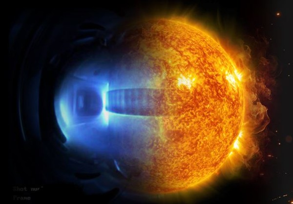
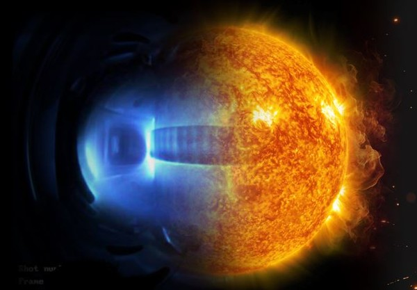
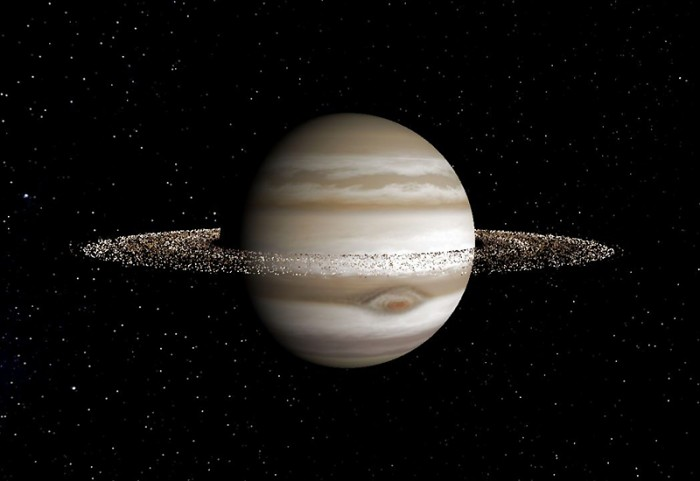
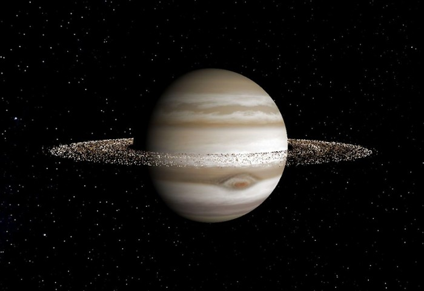

우주
우주는 시공간의 총체를 의미한다. 우주의 정의는 크게 두 가지 개념으로
구분된다. 좁은 의미의 우주는 일반적으로 '우주'하면 떠올리는 지구 대기권 바깥의
검은 공간을 가리킨다. 그 경계 지점은 고도 118km에 해당한다.
태양
태양은 태양계 중심에 있으며 지구에서 가장 가까운 행성이다. 본래 한국어로
해라고 한다. 지구를 비롯한 여러 행성과 소행성,유성,혜성, 등의 천체가 태양을
중심으로 돌고 있다.
수성
수성은 태양에서 평균 5,800만km 떨어져 태양계 행성 중 가장 가까운
궤도를
도는 행성이다.
반지름은 2,440km, 둘레 43,924km로 가장 작은 내행성이기도 하다.
목성
목성은 태양계 5번째 행성이자 가장 큰 행성이다
태양 질량의 1000분의 1
배의 달하는 거대행성으로, 태양계에 있는
다른 모든 행성들을 합한 질량의
약 2.5배에 이른다
 

 
